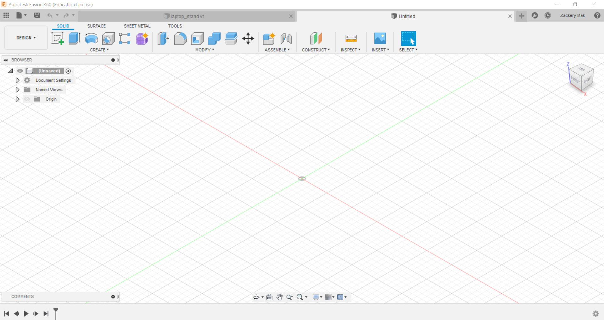
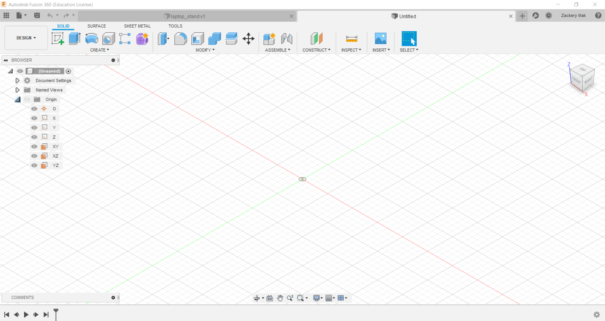
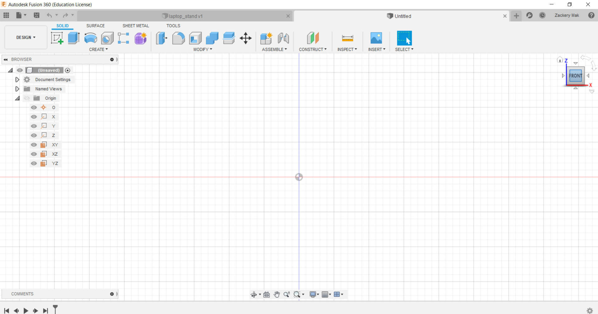
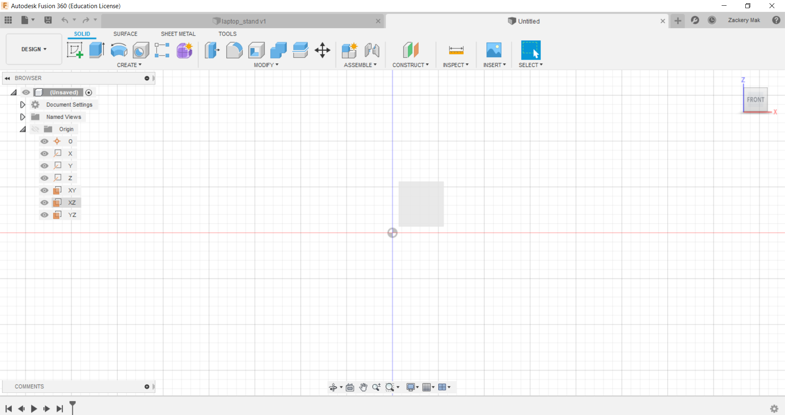
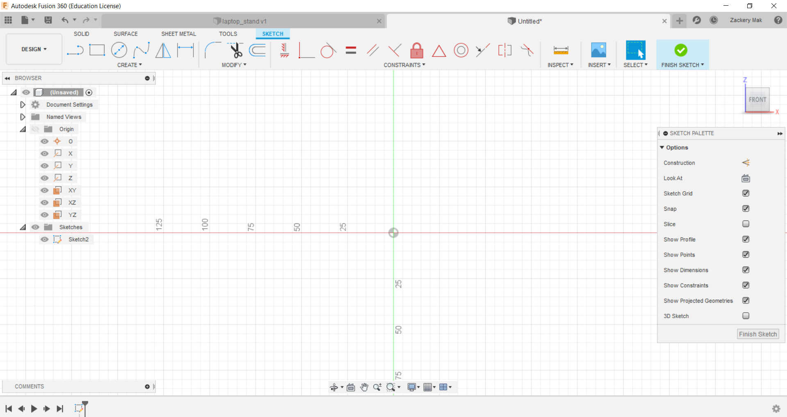
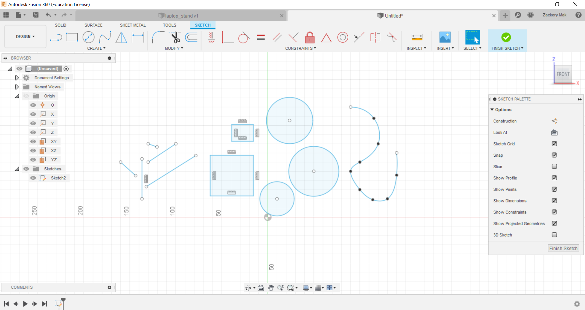

CAD Basics
This is what it will look like when you styrat a new project in FUSION 360. On the left side, you will see a drop-down bar of a few things. These include Document settings, Named views and most impotantly to start a new sketch, Origin.
When you click on the arrow, the orirgin bar should extend and you will see the different planes. These planes are where you will be starting your sketches. O is your origin point, X,Y and Z are 1 dimensional lines so you will not be able to do any sketching on them. Your last 3 options in the drop-down bar are the plane that you will be choosing from when you are starting a sketch.
To choose from which of the three planes you want to sketch on, look to the top right of the screen. You will see a cube with the words TOP, FRONT and RIGHT. These are indicators which tell you the orientaion that your model is in. If you want to draw your first sketch on the front plane for example, click on the face of the cube that says FRONT. It will change the oreintation of the screen and you will be on the front plane.
Next, hover over the three planes in the drop-down bar until you see a grey square on the screen. If the grey square appears when you hover over a plane, you know that the plane that you are hovering over will be the correct plane to start your sketch.
Once you find the corrrect plane, you can finally start your sketch! Right click on the plane and you will see an option to create sketch. Once you select create sketch, you will be greeted with a new horizontal bar above the drop-down bar. These are your sketch features and will be the tools that you will use to draw your product in the plane that you have chosen.
The sketch bar includes features like line, rectangle, circle and spline. There are more advanced features if you click on the CREATE arrow just below the bar but these will be the basic features to use when starting CAD.
